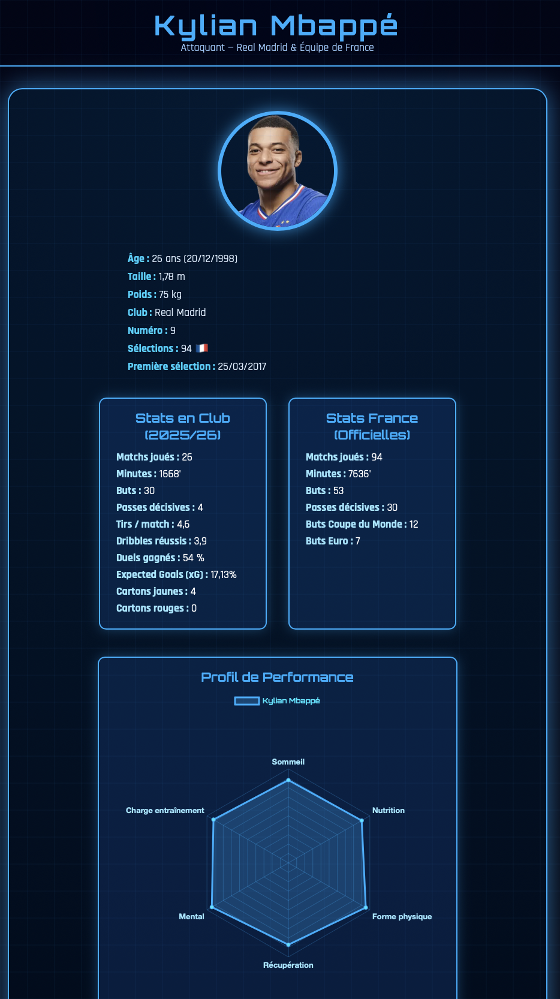

Dans le cadre de la ressource R6.03 — Connaissance de l'entreprise, nous avons dû créer une mini-entreprise autour d'une technologie du futur. L'objectif était de concevoir, promouvoir et vendre un produit innovant, en travaillant en mode collaboratif comme une vraie équipe d'entreprise.
Nous avons imaginé et développé le concept Interpulse, une technologie futuriste pensée pour être facilement intégrable dans le quotidien. Le projet incluait la conception du produit, la stratégie commerciale et une présentation pour convaincre un jury de son potentiel.
🔗 Ouvrir la présentation InterpulseEn complément, j'ai développé un site web dédié permettant d'accéder en temps réel aux statistiques des joueurs, renforçant ainsi l'aspect technologique et interactif de notre produit.

La principale difficulté était de trouver une idée suffisamment originale et réaliste à la fois, facilement intégrable dans un contexte futur crédible.
Le point positif a été le travail de groupe et la liberté de laisser libre cours à son imagination. Le fait d'avoir aussi développé un site web en parallèle m'a permis de mettre en pratique mes compétences techniques dans un contexte concret.